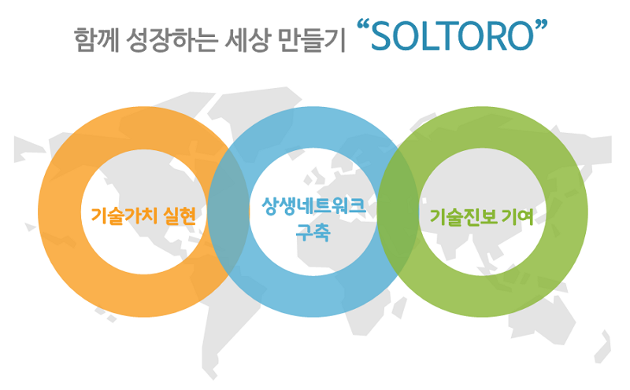
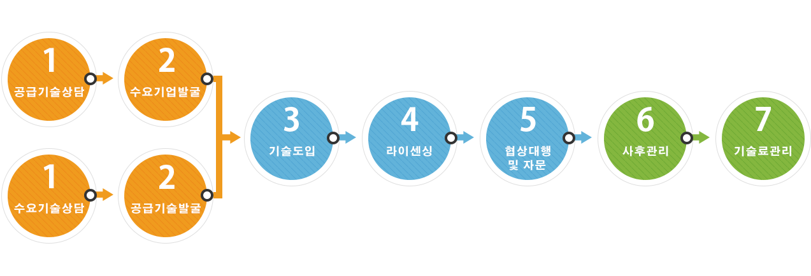
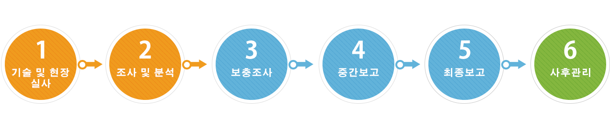

회사소개
인사말
"2010년 업계 최초로 기술이전 경상료 관리업무를 특성화하여 ㈜로열티로를 설립한 이래, 현재의 종합 IT서비스 기업으로 거듭난 ㈜솔투로에 이르기까지 우리의 성장은 도전의 연속이었습니다. 이러한 도전의 원동력은 “기술사업화” 영역에 대한 개척정신이었고, 기술사업화 성공을 위한 토탈서비스를 제공하겠다는 의지였습니다.
이에 솔투로는 기술경영 컨설팅 서비스와 더불어 기관 성장의 촉진제가 되어 줄 SW 솔루션의 개발과 공급, 제품의 유통 및 해외진출까지 지원하는 토탈서비스 제공 시스템을 갖추게 되었습니다.
이로써 실현하고자 하는 솔투로의 핵심가치는 “함께 하는 성장＂ 입니다. 저와 임직원 일동은 “기업의 성장을 돕는 조력자＂로서의 역할을 자임하며, 우리도 성장하고 고객도 성장하는 공영의 가치를 실현하고자 노력하고 있습니다."
대표이사 박양수
주요 사업영역
기술사업화 컨설팅
‘기술사업화’란 기술을 이용하여 제품의 개발, 생산 및 판매를 하거나 그 과정의 관련 기술을 향상시키는 것으로, ㈜솔투로는 이러한 기술 사업화 전 영역에 있어서 시장 친화적 관점으로 비즈니스 모델 수립, 우수기술 발굴, 기술거래, IP전략 수립, TRM 수립, 기술거래 등의 전문 역량 서비스를 제공합니다.
기술거래
‘기술거래’란 연구개발로 취득한 특허권 등의 권리 또는 기술(아이디어, 특허, 실용신안, 상표, 디자인, 저작물, 컴퓨터프로그램, 데이터베이스 등 지식재산의 산출물)을 실시하고자 하는 기업이나 개인에게 이전하거나 실시를 허여하는 것을 말합니다.

기술가치평가
‘기술가치평가’란 새로운 기술에 대한 경제성, 권리성, 대체성 등의 기회요인과 위험요인을 종합적으로 분석한 뒤, 해당 기술의 미래 자산가치를 현재 시점의 가치로 나타낸 것을 말합니다.
기술 유통에 있어 개별 기술의 가치를 계량적으로 환산해주는 서비스로, 사업을 통하여 보유한 기술이 창출할 수 있는 경제적 가치를 기술 시장의 일반적이고 인증된 가치평가 원칙과 방법론에 입각하여 평가하는 것입니다.

연구개발 컨설팅
‘연구개발 컨설팅’은 잠재적 시장가치가 있는 기술을 보유하였으나, 자본이 부족한 기업들의 연구활동을 보조하기 위한 컨설팅을 말합니다.
기업과 기술에 적합한 정부 과제를 신청하여, 기술 및 신제품 개발에 필요한 적절한 자금을 정부로부터 지원받을 수 있도록 도와 드립니다.
대표자 약력
학위
고려대학교 물리학과 학사 (1988 - 1995)
한국기술교육대학 기술경영학과 (MOT) 석사수료
자격증명
기술거래사 (지식경제부)
저작권관리사 (한국온라인저작권협회)
기업·기술가치평가사 (한국기업기술가치평가협회)
창업지도사 (삼일회계법인)
기술정보분석사 (한국전자정보통신산업진흥회)
기술정보검색사 (한국전자정보통신산업진흥회)
TRIZ 전문가 (한국TRIZ협회)
주요이력
대한민국 기술사업화 자문단 자문위원
지식경제 기술혁신평가단 평가위원
한국산업기술진흥원 평가위원
한국산업기술평가관리원(KEIT) 평가위원
한국산업기술진흥원(KIAT) 평가위원
이노비즈협회 대전충남세종지부 전문위원
대덕특구 기초기술 성과활용 전문평가위원
KISTI 서울 과학기술정보협의회 위원
(사)한국기업·기술가치평가협회 평가전문위원
창조경제타운 멘토
한국대학 기술이전협회 기술사업화전문가 멘토
한국산업 기술평가관리원 산업기술혁신 평가단위원